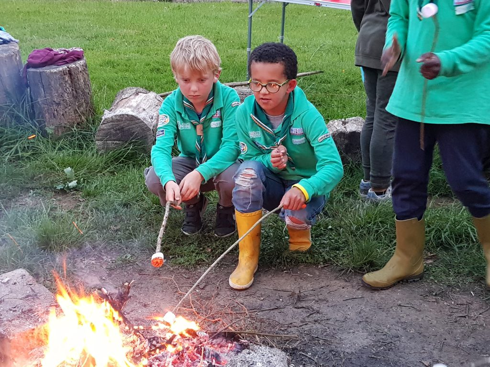
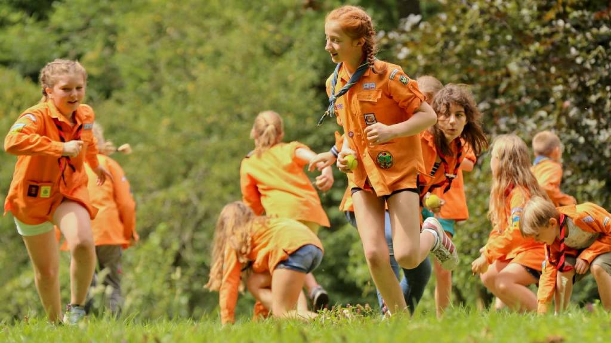
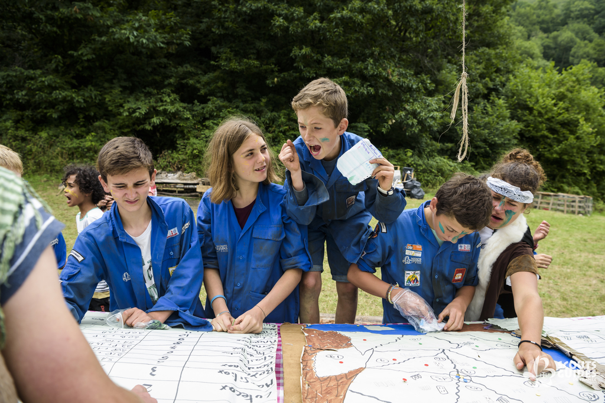
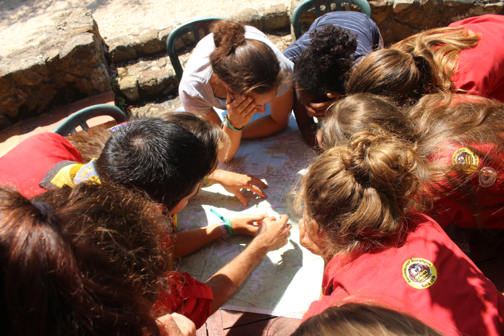
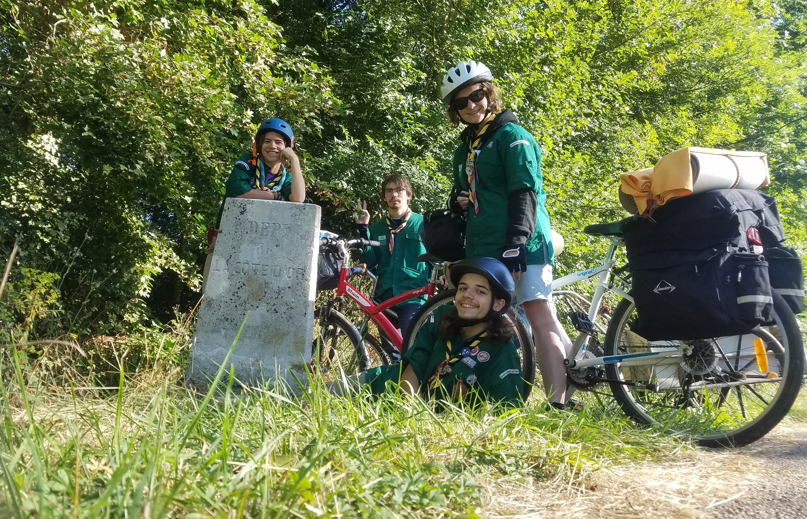

Afin de faire un point d'Histoire global, je vous laisse regarder cette vidéo qui présente super bien le mouvement scout.
Maintenant que vous savez comment est né le scoutisme, je vais vous expliquer comme le mouvement fonctionne. Nous sommes divisés en branches, qui correspondent à des tranches d'âge. Les scouts de France et les Guides de France ont fusionné en 2004 ce qui a formé les groupes mixtes. Mais que ce soit les filles ou les garçons, il n'y a qu'une seule loi à respecter. Elle est déposée au près du scoutisme et du guidisme mondial. Cette loi est issue d'une réécriture du père Sevin qui l'avait écrite pour le mouvement. Cette loi, la voici:
la guide, le scout ;
art.1 Parle en vérité et agit en cohérence ;
art.2 Est digne de confiance et sait faire confiance aux autres ;
art.3 Va au devant des autres et tisse des liens de fraternité avec les scouts et guides du monde entier ;
art.4 Emploie ses ressources avec sagesse ;
art.5 Affronte les difficultés avec optimisme ;
art.6 Participe à la construction d'un monde de justice et de paix ;
art.7 Aime et protège la Création ;
art.8 Vit avec énergie et prend des initiatives ;
art.9 Accueille la Bonne Nouvelle par ses actes au service des autres ;
art.10 Est ma ître (responsable) de ses paroles, de ses actes et de ses pensées.
Maintenant que les présentation sont faites, je vais vous parler des différentes branches. Commençons par les farfadets !
Les farfadets
Ce sont les plus jeunes du groupe, ils ont entre 6 et 8 ans. Ils sont considérés comme une branche à part entière des sgdf depuis 2019. Avant ils avaient un polo vert pomme et sont passés récemment à la chemise de la même couleur ! La branche est encadrée par un parent référent, c'est lui qui va organiser les week ends, souvent chez l'un des jeunes. Ils découvrent la nature en s'amusant, à travers différentes activités manuelles. Mais il ne faut pas oublier la partie réflexion, ils se posent des questions et essaient d'y répondre ensemble avec leurs mots. Lors des camps d'été, qui durent souvent moins d'une semaine, il est campé dans le jardin d'un des jeunes. Un imaginaire souvent autour de la nature et de la découverte est mis en place. Nos petits farfadets nous font découvrir leur avanture au week end de rentrée grâce à un diaporama diffusé devant tous les jeunes et les parents du groupe !
Les louveteaux Jeannettes
Une fois avoir fait les 3 années de farfadet c'est le moment de rentrer dans la peuplade! Les garçons sonr les louveteaux et les jeanettes sont les filles. Ils vont de 8 à 11 ans. Les enfants découvrent l'autonomie, la vie avec les autres et prennent coonfiance ne eux. Ils sont accompagnés toute l'année de chefs et cheftaines bénévoles. Ils sont organisés en équipes de filles et de garçons ce qui définis la composition des tentes. Mais toutes les autres activités sont réalisées tous ensemble, comme les jeux, la vaisselle etc. Ils discutent aussi en "conseils" pour faire le point sur le fontionnement du groupe. Chaque jeune progresse dans des domaines et pour marquer ces progressions, ils ont des insignes à coudre sur leur chemise. Les chefs et les jeunes choisisent un imagiaire d'année sur lequel sera fondé les veillés mais surtout le camp d'été.
Les scouts et Guides
Après avoir évoluer au sein de la peuplade, il est temps de former sa tribu ! Et oui, les chemises bleues avancent en meute maintenant. Les jeunes sont toujours séparés en équipes appelées "équipages" oú chacun a un rôle comme coach, architecte, intendant, pilote, témoin ou encore artiste traduit en écussons à coudre sur la chemise. Le rôle le plus important est "Pilote", il est souvent attribué aux jeunes de 3ème année. Ce rôle consiste à s'occuper de son équiage, et d'être l'interlocuteur principale avec la maîtrise (les chefs et chaftaines). L'équipage est formé pour un an, jusqu'à la fin du camp d'été. Il est possible de changer de rôle pour le camp pour que les jeunes puissent faire tous les rôles pendant leurs 3 années au sein de la tribu. Au début de l'année, en plus d'apprendre à vivre en équipage, les jeunes se mettent d'accord sur un projet d'année appelée "l'aventure". Les jeunes vivent environ 2 aventures pendant l'année et une pendant le camp (toujours sur le même thème). L'équipage à pour but de faire découvrir l'autonomie aux jeunes à travers des réunions, week end et services d'équipage. Mais la grande épreuve dans l'autonomie des jeunes se vit pendant le camp, pendant l'exploration ! Les jeunes préparent avec les chefs une explorations de 24h autour de camp. Après avoir grandi pendant ces 3 années, c'est le début d'une nouvelle histoire... La caravane !
les pionniers caravelles
La caravane... Une grande histoire ! Tout d'abord elle réunit les pionniers et les caravelles (souvent appelés les "piokas"). Les jeunes de 14 à 17 ans sont toujours encadrés par les chefs et les cheftaines mais ils leur donnent de plus en plus de liberté. Les piokas réalisent un CAP d'année qui est l'acronyme de : "Concevoir, Agri, Partager". C'est le même principe que "l'aventure" des bleus mais en plus approndis et tourné vers les autres. Les caps peuvent être autour de plusieurs domaines comme la solidarité, l'internationale, la communication, la fabrication etc. Cela peut se traduire par la fabrication de caisse à savons, l'organisation de grand jeu ouvert à tous etc. Mais cela structure également le camp d'été. En effet, pleins de portes s'ouvrent aux jeunes, comme un camp itinérant (on bouge chaque jour), un camp international avec des jeunes d'un autres pays, la rénovation d'un château, un camp radeaux etc. Pour qu'un projet soit considéré comme un cap, il faut qu'il soit utile, apporte de la découverte, de la rencontre, pousser au dépassement de soi et il faut aussi que le projet soit créatif. La progression des jeunes se fait tout au long des 3 années. Au début de sa première année, le jeune reçoit un cairn. C'est une insigne oú au fur et à mesure que l'on évolue, on gagne des pierres à coller dessus, le but étant de toutes les avoir. Elles correspondent à vivre ensemble, vivre avec des valeurs, vivre avec énergie, vivre avec son temps, vivre avec espérence, vivre avec rayonnement.
Il y a aussi un fonctionnement de rôle comme aux bleus mais ils ne sont pas les mêmes et donnent plus de responsabilités. Nous pouvons retrouver le chef d'équipe, le responsable intendance, budget, matériel, animation, santé, communication, vie spirituelle, documentation et hébergement. A la fin de chaque année, les jeunes ont un temps de réflexion. A la fin de la première année, les jeunes font leur "source", c'est là où ils vont écrire leur texte de promesse (chaque jeune passe leur promesse dans chaque unité). Pendant la deuxième année, les jeunes écrivent une lettre à eux-mêmes et pendant la troisième année, il relisent leur lettre écrite un an avant. Pendant toutes ces années, depuis les farfadets, les jeunes ont bien grandi, c'est le moment de prendre leur envole mais pas quitter le scoutisme, les chefs et les cheftaines nous ont préparer à découvrir le monde de façon responsable, les jeunes deviennent alors des compagnons !
Compagnons
Et voilà c'est la branche ainée des Scouts et Guides de France. Elle réunit des jeunes de 17 à 21 ans. Cette aventure change des autres, les enfants, devenus des jeunes puis des jeunes adultes ont changés et ont ouvert leur esprit au monde qui les entoure. Les chefs et les cheftaines ne sont plus là à pour encadrer les compagnons, ils s'encadrent seuls, ils organisent leurs week ends, leurs camps mais aussi tous les projets. Néanmoins, ils ne sont pas totalement seuls. Tout d'abord ils font partis de la maî, c'est à dire, qu'ils participent aux conseils de groupes avec tous les chefs et cheftaines du groupe. Ils peuvent donc communiquer avec eux sur leurs projets. Mais ce n'est pas tout ! Il y a des accompagnateurs compas appelés plus famillièrement les "accoco". Ce sont d'anciens compagnons qui vont les épauler dans leurs démarches et leur vie d'équipe mais ils ne partent pas en camp avec les jeunes. Il n'y a plus une seule grande équipe comme dans les autres branches. Il y a plusieurs équipes d'entre 3 à 6 membres. Ils peuvent ne pas du tout avoir les mêmes projets mais cela ne les empêchent pas de faire quelques weeks end ensemble. Les années compagnons s'organisent en 3 temps (mais ils peuvent être redoublés si besoins). Pendant la première année, c'est l'année la plus importante, c'est la fondation de l'équipe. On se soude, on apprend à se connaître, on réfléchis à nos projets etc. Mais c'est aussi l'année où l'équipe va faire des "expériments courts". Un exprériment est un projet, une aventure en adéquation avec une des pistes d'action: l'environnement, l'humanité, le sport, l'expression et communication, la paix et droits de l'homme, le developpement, l'évangile et la vie scoute ou encore l'enfance et l'éducation. L'expériment courts doit être réalisé avec un partenaire en rapport avec le projet. Par exmple, si l'équipe décide de partir sur l'écologie, elle peut faire un camp avec Les experts forestiers de France, ce qui leur apporterait des connaissances sur les arbres et la gestions des forê et de l'éco-système. Pour rester ne adéquation avec les pistes d'action choisies, le camp d'été pourrait être réalisé à vélo. Pendant la première année, c'est également le moment de faire sa promesse ! C'est un grand moment, où chacun fait la promesse de respecter la loi scouts et accete d'être scout au quotidien. Cette cérémonie se déroule souvent la nuit. Ici elle est toujours organisée par les compas eux-même. Il est possible de choisir un parrain ou une marraine qui nous accueil dans notre nouvelle promesse. Puis vient le moment du deuxième temps. C'est un temps important et le plus fort de la vie d'un jeune. C'est l'année de l'expériment long. On garde le même principe que le court mais en plus long sur la durée mais aussi plus loin. En effet, l'expériment court est souvent en France alors que l'expériment long, se passe souvent à l'étranger. L'équipe garde la même ligne conductice mais on plus approffondies. Si l'équipe avait choisie de faire de l'humanitaire, elle peut partir dans un pays d'afrique afin d'aider à la construction d'un orphelinat par exemple. Si l'équipe est plus orientée sur l'environnement, elle peut partir à vélo traverser un bout de la Suède pour découvrir les acteurs de l'écologie dans les pays scandinaves. Cet expériment dure minimum 1 mois, pour avoir le temps de faire le trajet, et de faire des rencontres et d'apprendre un maximum de chose. Puis vient le moment du troisième temps, plus souvent appelé, le temps de relecture. C'est une année où l' équipe va diffuser ce qu'ils ont pu apprendre lors de leurs voyages.
Que ce soit aux farfadets, aux louvetaux-jeanettes,aux scouts et guides, aux piokas ou aux compagnons, il y a toujours un retour de camp afin de pouvoir montrer ce qu'on a appris, ce qui nous a amusés mais aussi garder un souvenir de notre aventure, résumé d'un an de travail pour les jeunes et les chefs. Afin que vous puissiez vous rendre compte de ce qu'est un camp, je vous laisse regarder un aftermovie d'une équipe compagnons.